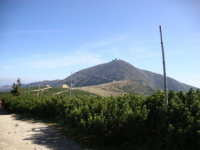

(polsky Śnieżka, německy Schneekoppe) je se svými 1602 m n. m. nejvyšší horou Hraničního (Slezského) hřebenu Krkonoš, Sudet, Čech i celého Česka a celého Slezska.
Je to významná dominanta východní části Krkonoš. Přes vrchol Sněžky prochází česko-polská hranice. Na vrchol vede ze 4,5 km vzdálené Pece pod Sněžkou sedačková lanovka. Severní, polská strana spadá do údolí řeky Lomničky, západní do Úpské rašeliny, jihozápadní část do Obřího dolu, jihovýchodní do údolí Jeleního potoka a východní přecházejí v Obří hřeben.
Vrcholek hory je skalnatý a má rozlohu okolo 120 000 m². Jelikož je Sněžka nejvyšší hora v širokém okolí, je z vrcholku rozsáhlý panoramatický pohled do širokého okolí. Vrcholek slouží jako častý turistický cíl a pro jeho dosažení je možné využít celou řadu turistických cest a to jak pěších, cyklistických tak i běžkových.